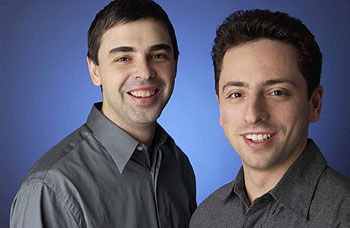

Indice
¿Que es Google?
Google LLC es una compañía principal subsidiaria de la multinacional estadounidense Alphabet Inc., cuya especialización son los productos y servicios relacionados con Internet, software, dispositivos electrónicos y otras tecnologías. El principal producto de Google es el motor de búsqueda de contenido en Internet, del mismo nombre, aunque ofrece también otros productos y servicios como el correo electrónico llamado Gmail, sus servicios de mapas Google Maps, Google Street View y Google Earth, el sitio web de vídeos YouTube y otras utilidades web como Google Libros o Google Noticias, Google Chrome y la red social Google+. Por otra parte, lidera el desarrollo del sistema operativo basado en Linux, Android, orientado a teléfonos inteligentes, tabletas, televisores y automóviles y en gafas de realidad aumentada, las Google Glass.
Con miles de servidores y centros de datos presentes en todo el mundo, Google es capaz de procesar más de 1000 millones de peticiones de búsqueda diarias y su motor de búsqueda es el sitio web más visitado a nivel mundial tal como muestra el ranking web internacional.
La empresa es y ha sido criticada por colaborar con determinados países en la censura de Internet con el afán de expandirse comercialmente en ellos y por la infracción reiterada de derechos de autor. También es objeto de críticas por presunta ingeniería fiscal en diferentes países, y por ser una de las empresas que colaboran con las agencias de inteligencia en la red de vigilancia mundial, sacada a la luz en 2013.
Historia
Larry Page y Sergey Brin comenzaron Google como un proyecto universitario en enero de 1996 cuando ambos eran estudiantes de posgrado en ciencias de la computación en la Universidad de Stanford. El nombre original del buscador era BackRub, en 1997 los fundadores deciden cambiar el nombre a Google inspirados por el término matemático «gúgol» que se refiere al número 10 elevado a la potencia de 100, en referencia a su objetivo de organizar la enorme cantidad de información en la Web. Page y Brin fundan, el 4 de septiembre de 1998, la compañía Google Inc., que estrena en Internet su motor de búsqueda el 27 de septiembre siguiente (considerada la fecha de aniversario). Contaban con un armario lleno de servidores (unos 80 procesadores), y dos routers HP. Este motor de búsqueda superó al otro más popular de la época, AltaVista, que había sido creado en 1995. En el 2000 Google presentó AdWords, su sistema de publicidad en línea y la llamada Barra Google.
En febrero de 2001, Google compra el servicio de debate Usenet Deja News y lo transforma en Google Grupos. En marzo del mismo año Eric Schmidt es nombrado presidente de la junta directiva. En julio de 2001 lanza su servicio de búsqueda de imágenes. En febrero de 2002 lanza Google Search Appliance. En mayo lanza Google Labs que cerrará 9 años más tarde. En septiembre se lanza Google Noticias. En diciembre del mismo año se lanza el servicio de búsqueda de productos llamado Froogle, ahora denominado Google Products. En febrero de 2003 Google adquiere Pyra Labs y con ello el servicio de creación de blogs Blogger. En abril se presenta Google Grants, un servicio de publicidad gratuito para organizaciones sin ánimo de lucro. En diciembre de ese año se lanza Google Print, posteriormente Google Libros.
En enero de 2004, lanza la red social orkut. En marzo se lanza Google Local que más tarde se integraría con Google Maps. En abril Google presentó GMail, su servicio de correo electrónico con 1 Gb de almacenamiento. El 19 de agosto Google Inc. saldría a la bolsa de valores bajo el símbolo de NASDAQ:GOOG, con una oferta inicial de 25,7 millones de acciones, y con un rango de precios de 85 a 95 dólares. En octubre de ese año lanzan Google Desktop, que será descontinuado. También lanzó el llamado Google Académico. El 18 de agosto de ese mismo año Google salió a bolsa en WallStreet. En 2004 compró la empresa Keyhole. Un año después, en 2005, sacaron a la luz Google Maps y Google Earth. Ese mismo año Google compró Android Inc. Vint Cerf, considerado uno de los padres de Internet, fue contratado por Google en 2005. También lanzó Google Code y se desarrolla el primer Summer of Code. En agosto presenta Google Talk. En octubre Google lanza su lector de feeds RSS Google Reader. En noviembre se presenta Google Analytics y en diciembre Google Transit. En 2006, lanza Picasa. En marzo adquiere Writely para más tarde lanzar Google Docs y presenta ese mismo mes Google Finance. En abril se presenta Google Calendar y en agosto Google Apps, servicio orientado a empresas. En octubre de 2006, Google adquirió por 1650 millones de dólares la página de vídeos YouTube. Ese mismo mes adquiere JotSpot que más tarde se convertirá en Google Sites. Un año des pués, en 2007, Google lanzó el sistema operativo abierto para móviles Android y creó la Open Handset Alliance. En abril de 2007, Google compró DoubleClick,8 una empresa especializado en publicidad en Internet, por 3100 millones de dólares. Este mismo mes, Google se convirtió en la marca más valiosa del mundo, alcanzando la suma de 66 000 millones de dólares, superando a emblemáticas empresas como Microsoft, General Electric y Coca-Cola. En junio lanza Google Gears que más tarde será abandonado debido a que lo que ofrecía más tarde fue incorporado en HTML5. En julio de 2007, Google compró Panoramio, un sitio web dedicado a exhibir las fotografías que los propios usuarios crean y geoposicionan, siendo algunas de ellas subidas al sitio para que puedan ser vistas a través del software Google Earth, cuyo objetivo es permitir a los usuarios del mencionado software aprender más sobre una zona específica del mapa, observando las fotografías que otros usuarios han tomado ahí. En noviembre presenta OpenSocial.